Familien mit KindernFamilies with children
Orte, an denen Kinder Tiere, Natur und Schiffe erleben und Eltern entspannt mitgehen können.Places where children can see animals, nature and boats, and where parents can relax.
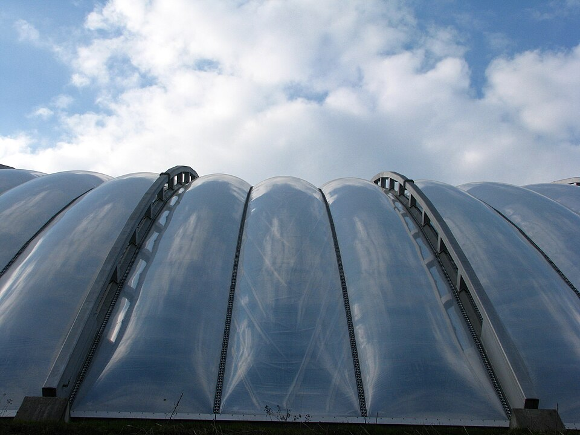
Foto: Photo: Roland zh, CC BY-SA 3.0, Wikimedia Commons Zoo ZürichZoo Zürich
Viele Tiere aus aller Welt. In der Masoala-Regenhalle läuft man durch einen echten Regenwald.Many animals from around the world. In the Masoala Rainforest Hall you walk through a real rainforest.
Am Zürichberg, mit dem Tram erreichbar.On the Zürichberg, reachable by tram.
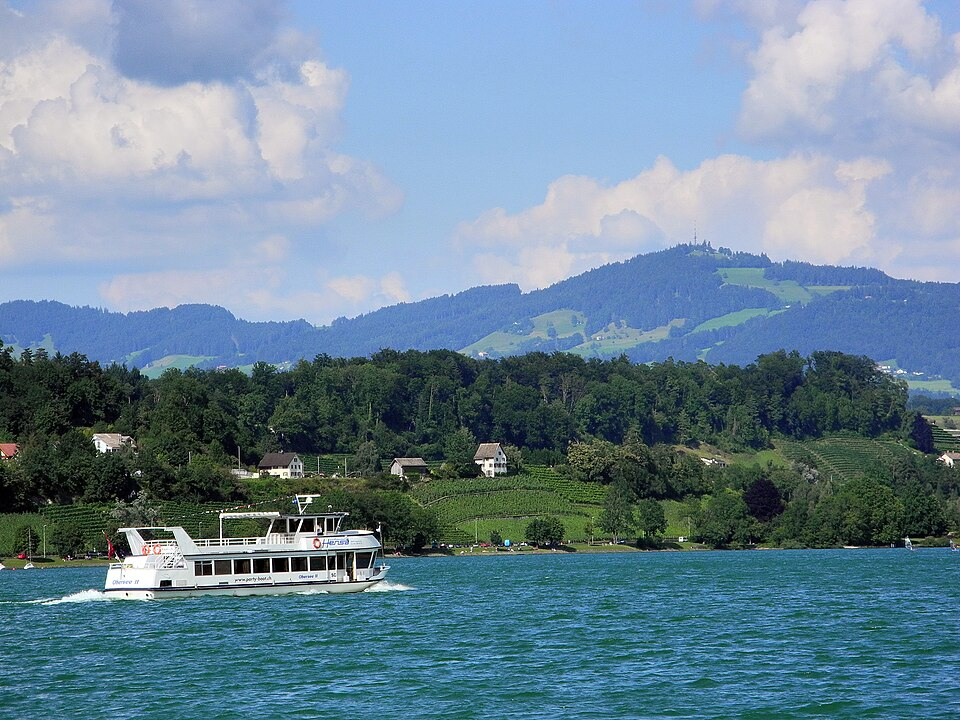
Foto: Photo: Roland zh, CC BY-SA 3.0, Wikimedia Commons Schifffahrt auf dem ZürichseeBoat trip on Lake Zürich
Eine Rundfahrt zeigt die Stadt und die Berge vom Wasser aus. Für Kinder ist das ein Erlebnis.A round trip shows the city and the mountains from the water. Children love it.
Abfahrt am Bürkliplatz.Departs from Bürkliplatz.
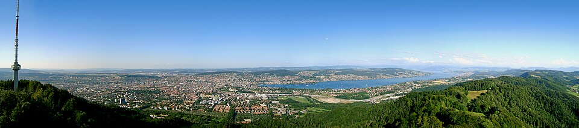
Foto: Photo: Heni2000, CC BY-SA 3.0, Wikimedia Commons Uetliberg und PlanetenwegUetliberg and Planet Trail
Ein Spaziergang auf dem Hausberg. Auf dem Planetenweg lernen Kinder die Größe unseres Sonnensystems kennen.A walk on Zürich's local mountain. On the Planet Trail children learn how big our solar system is.
Mit der S-Bahn bis Uetliberg.By S-Bahn to Uetliberg.
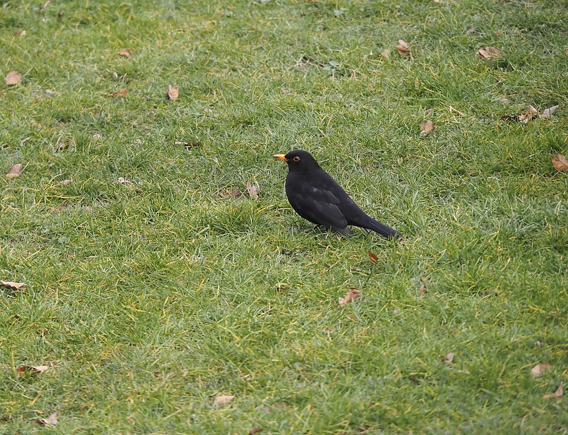
Foto: Photo: Arkelin, CC BY 4.0, Wikimedia Commons Botanischer GartenBotanical Garden
Ein großer Garten mit Pflanzen aus vielen Ländern, mit Wiesen zum Spielen und Ausruhen. Der Eintritt ist frei.A big garden with plants from many countries, with lawns for playing and resting. Admission is free.
Im Stadtteil Hottingen.In the Hottingen district.

.JPG){kind=link}


JugendlicheTeenagers
Orte zum Ausprobieren, Treffen und Abhängen mit Freunden.Places to try things out and meet friends.
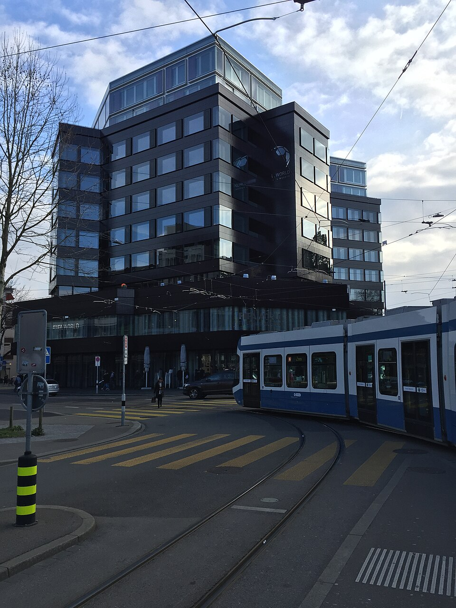
Foto: Photo: albinfo, CC BY-SA 4.0, Wikimedia Commons FIFA World Football MuseumFIFA World Football Museum
Ein Museum rund um Fußball mit Pokalen, Trikots und Mitmach-Stationen.A museum about football with trophies, shirts and hands-on stations.
Im Stadtteil Enge, nahe dem Bahnhof Enge.In the Enge district, near Enge station.
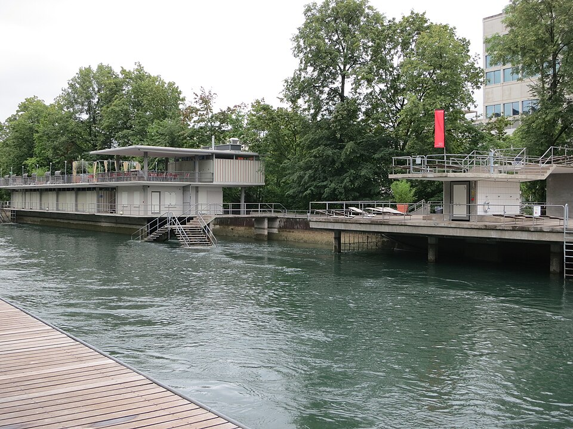
Foto: Photo: Paebi, CC BY-SA 4.0, Wikimedia Commons Flussbad Oberer LettenOberer Letten river baths
Im Sommer baden und chillen direkt an der Limmat, mitten in der Stadt.In summer you can swim and relax right on the Limmat, in the middle of the city.
Beim Platzspitz, nahe dem Hauptbahnhof.By the Platzspitz, near the main station.
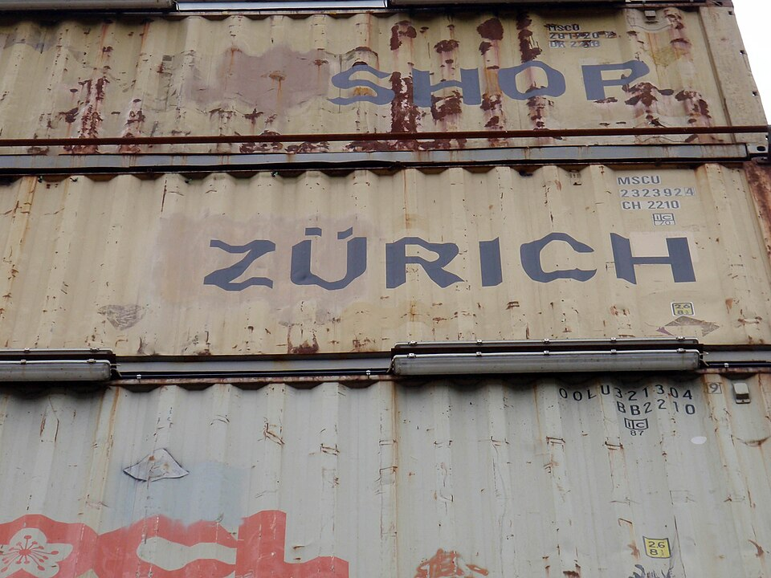
Foto: Photo: Daniel Lobo, CC BY 2.0, Wikimedia Commons Freitag Flagship StoreFreitag Flagship Store
Ein Turm aus gestapelten Frachtcontainern, in dem Taschen aus gebrauchten Lastwagenplanen verkauft werden.A tower of stacked freight containers where bags made from used truck tarpaulins are sold.
In Zürich West.In Zürich West.
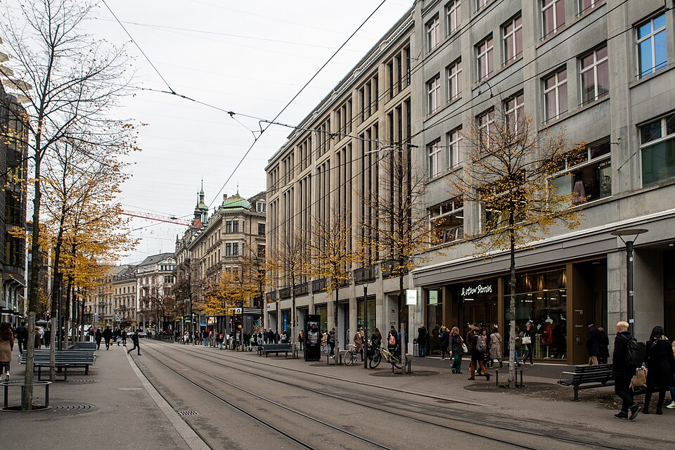
Foto: Photo: Balise42, CC BY 4.0, Wikimedia Commons BahnhofstrasseBahnhofstrasse
Die bekannteste Einkaufsstraße der Stadt. Gut zum Bummeln und Leute beobachten.The best-known shopping street in the city. Good for strolling and people-watching.
Vom Hauptbahnhof bis zum Bürkliplatz.From the main station to Bürkliplatz.


.jpg){kind=link}

Erwachsene und SeniorenAdults and seniors
Kultur, Geschichte und ruhige Wege, auch für alle, die lieber ohne lange Strecken unterwegs sind.Culture, history and quiet paths, also for anyone who prefers short distances.
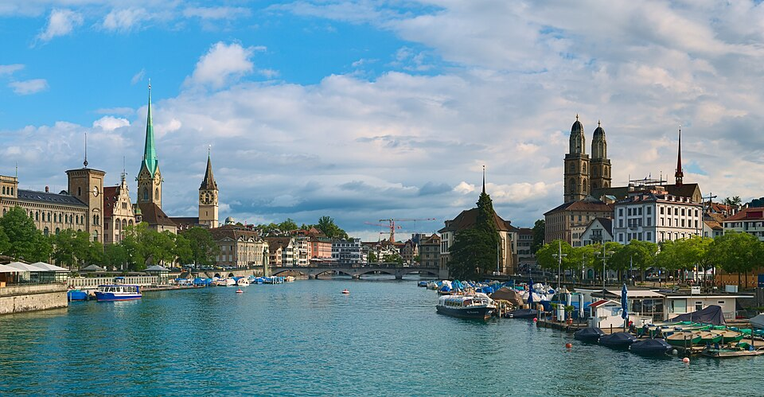
Foto: Photo: Daniel Kraft, CC BY-SA 3.0, Wikimedia Commons GrossmünsterGrossmünster
Das Wahrzeichen der Altstadt. Von den Türmen aus siehst du über die Dächer der Stadt.The landmark of the old town. From the towers you can see over the city's rooftops.
Am Limmatufer in der Altstadt.On the Limmat in the old town.
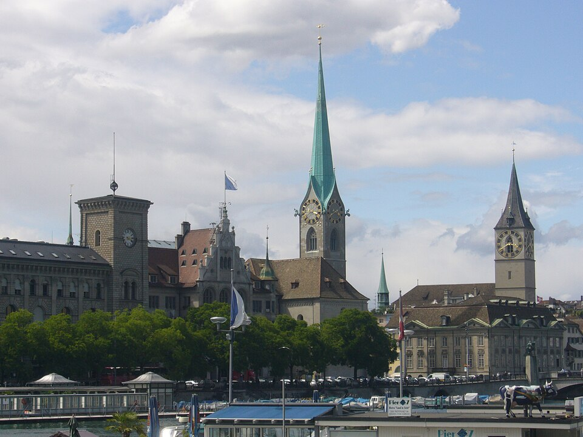
Foto: Photo: Abderitestatos, CC BY 3.0, Wikimedia Commons FraumünsterFraumünster
Die Kirche ist bekannt für ihre farbigen Kirchenfenster von Marc Chagall.The church is known for its colourful stained-glass windows by Marc Chagall.
In der Altstadt, am Münsterhof.In the old town, at the Münsterhof.
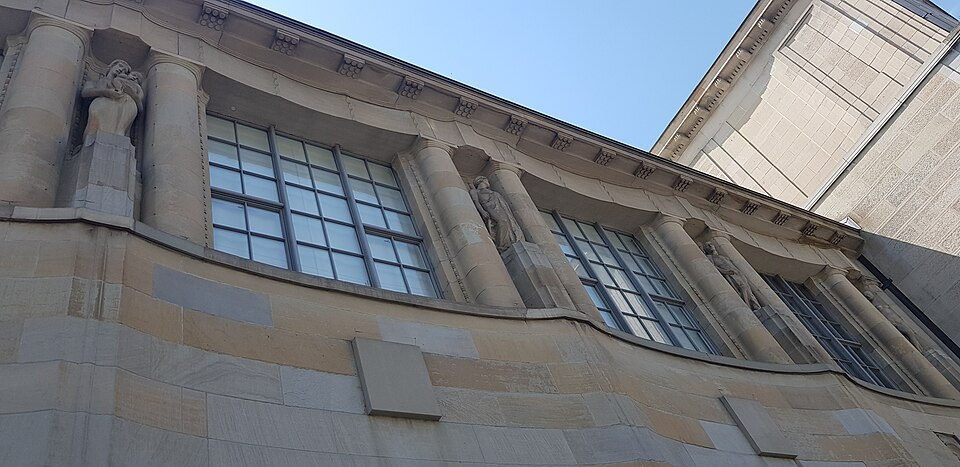
Foto: Photo: Armineaghayan, CC BY-SA 4.0, Wikimedia Commons Kunsthaus ZürichKunsthaus Zürich
Eines der großen Kunstmuseen der Schweiz mit Werken vom Mittelalter bis zur Gegenwart.One of Switzerland's major art museums, with works from the Middle Ages to today.
Am Heimplatz.At Heimplatz.
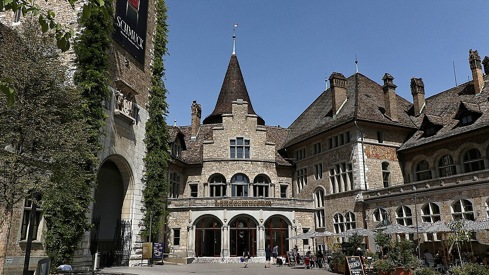
Foto: Photo: Burkhard Mücke, CC BY-SA 4.0, Wikimedia Commons Landesmuseum ZürichSwiss National Museum
Das Museum erzählt die Geschichte der Schweiz in einem Gebäude, das wie ein Schloss aussieht.The museum tells the history of Switzerland in a building that looks like a castle.
Direkt neben dem Hauptbahnhof.Right next to the main station.
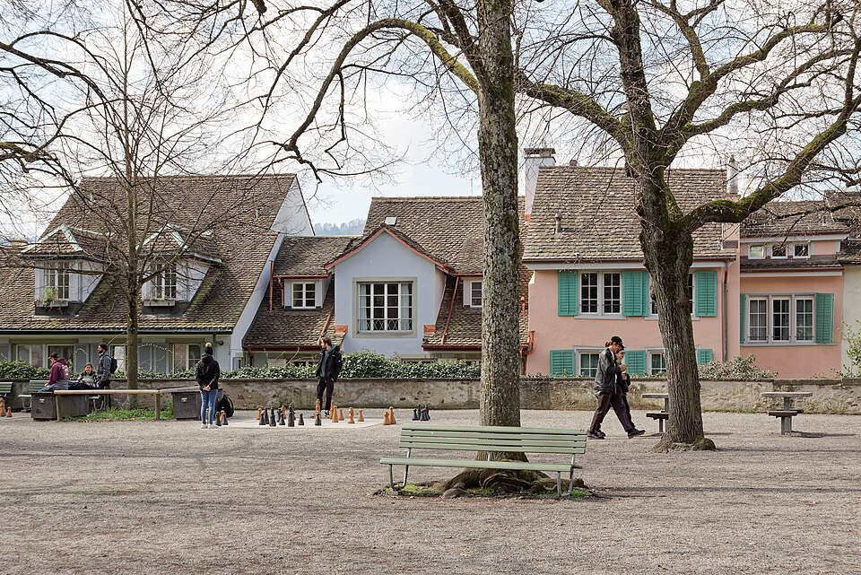
Foto: Photo: Jakub Hałun, CC BY 4.0, Wikimedia Commons LindenhofLindenhof
Ein ruhiger Platz mit Bänken und Aussicht auf die Limmat und die Altstadt.A quiet square with benches and a view of the Limmat and the old town.
Oberhalb der Altstadt.Above the old town.
SeepromenadeLakeside promenade
Ein flacher Spazierweg am Zürichsee mit Bänken, Wiesen und viel Platz zum Ausruhen.A flat walk along Lake Zürich with benches, lawns and plenty of room to rest.
Zwischen Bürkliplatz und Zürichhorn.Between Bürkliplatz and Zürichhorn.


Tipp: Öffnungszeiten und Preise ändern sich. Schau vor dem Besuch auf der Website des Ortes nach. Tip: Opening times and prices change. Check the website of the place before you go.
BildnachweisImage credits
Alle Fotos stammen von Wikimedia Commons und stehen unter den angegebenen Creative-Commons-Lizenzen. Die Bilder wurden verkleinert und zugeschnitten. All photos come from Wikimedia Commons and are licensed under the Creative Commons licences shown. The images were resized and cropped.
- „Zürich view Quaibrücke 20200702“ · Daniel Kraft · CC BY-SA 3.0 · Wikimedia Commons
- „Zürich - Zoo - Masoala Halle IMG 5821“ · Roland zh · CC BY-SA 3.0 · Wikimedia Commons
- „Zürich Panorama vom Uetliberg“ · Heni2000 · CC BY-SA 3.0 · Wikimedia Commons
- „Zürich Flussbad Oberer Letten“ · Paebi · CC BY-SA 4.0 · Wikimedia Commons
- „FREITAG SHOP ZÜRICH (3755596568)“ · Daniel Lobo · CC BY 2.0 · Wikimedia Commons
- „Kunsthaus Zürich by ArmAg“ · Armineaghayan · CC BY-SA 4.0 · Wikimedia Commons
- „Lindenhof Hill, Zurich, 20250330 1227 7917“ · Jakub Hałun · CC BY 4.0 · Wikimedia Commons
- „Landesmuseum Zürich, 2017“ · Burkhard Mücke · CC BY-SA 4.0 · Wikimedia Commons
- „FIFA Museum Feb2016-1“ · albinfo · CC BY-SA 4.0 · Wikimedia Commons
- „UtoquaiTuriciII“ · Abderitestatos · CC BY 3.0 · Wikimedia Commons
- „Feldbach - Bachtel - Zürichsee - Dampfschiff Stadt Zürich 2012-07-22 17-01-09 (P7000)“ · Roland zh · CC BY-SA 3.0 · Wikimedia Commons
- „Zürich Bahnhofstrasse 02“ · Balise42 · CC BY 4.0 · Wikimedia Commons
- „Botanischer Garten Zürich 2025 A 04“ · Arkelin · CC BY 4.0 · Wikimedia Commons
Impressum
Schulprojekt, kein geschäftliches Angebot. Verantwortlich für den Inhalt:School project, not a commercial offer. Responsible for the content:
[Vor- und Nachname / first and last name]
[Straße und Hausnummer / street]
[PLZ Ort / postcode and city]
Kontakt:Contact: [E-Mail]
Die gelb markierten Angaben müssen vor der Veröffentlichung ausgefüllt werden, zusammen mit der Lehrkraft und den Eltern. The highlighted details must be filled in before publishing, together with the teacher and parents.
DatenschutzerklärungPrivacy policy
Verantwortlicher
Siehe Impressum.
Hosting
Diese Seite wird über GitHub Pages bereitgestellt (GitHub Inc., USA, ein Unternehmen von Microsoft). Beim Aufruf verarbeitet der Anbieter technisch notwendige Daten, etwa deine IP-Adresse, Datum, Uhrzeit und die aufgerufene Datei, in Server-Logdateien. Rechtsgrundlage ist Art. 6 Abs. 1 lit. f DSGVO (sicherer und stabiler Betrieb der Seite). Dabei kann eine Übermittlung in die USA stattfinden.
Cookies und Tracking
Diese Seite setzt keine Cookies, nutzt keine Analyse- oder Werbedienste und lädt keine Schriften, Bilder oder Skripte von fremden Servern. Alle Bilder liegen auf demselben Server wie die Seite. Die Links zu Wikimedia Commons und Creative Commons werden erst geöffnet, wenn du sie anklickst.
Spracheinstellung
Deine Wahl zwischen Deutsch und Englisch wird nur in deinem Browser (localStorage) gespeichert, damit sie beim nächsten Besuch erhalten bleibt. Sie wird nicht an uns übertragen.
Deine Rechte
Du hast das Recht auf Auskunft, Berichtigung, Löschung, Einschränkung der Verarbeitung und Widerspruch sowie das Recht, dich bei einer Datenschutzaufsichtsbehörde zu beschweren.
Controller
See the legal notice (Impressum).
Hosting
This site is provided through GitHub Pages (GitHub Inc., USA, a Microsoft company). When you open the page, the provider processes technically necessary data such as your IP address, date, time and the requested file in server log files. The legal basis is Art. 6(1)(f) GDPR (secure and stable operation of the site). Data may be transferred to the USA.
Cookies and tracking
This site sets no cookies, uses no analytics or advertising services and loads no fonts, images or scripts from third-party servers. All images are stored on the same server as the page. Links to Wikimedia Commons and Creative Commons only open when you click them.
Language setting
Your choice between German and English is stored only in your browser (localStorage) so it is kept for your next visit. It is not sent to us.
Your rights
You have the right of access, rectification, erasure, restriction of processing and objection, and the right to lodge a complaint with a data protection supervisory authority.